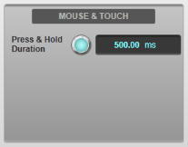
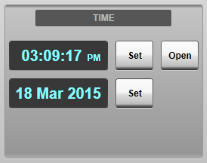
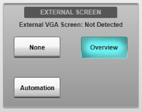
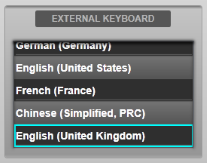
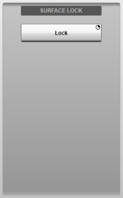
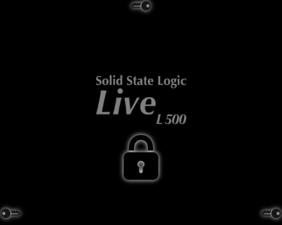
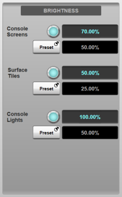

The Options can be found in MENU > Setup > Options.
The following pages detail the settings in each Options tab:
CONSOLE Options (this page)
SYSTEM Options
SURFACE Options
USER Options
USER KEYS Options
REMOTE Options
NETWORK Options
DAW Options
External Control Options
Console Options
These relate to console-specific settings such as screen brightness, external screen options etc.
Console Options are found in MENU > Setup > Options > CONSOLE tab.
Mouse & Touch
The duration for on-screen press & hold buttons is adjusted in the Mouse & Touch area of the Options screen.
To change, drag the on-screen encoder or double-tap the text field. 400 ms is a good starting place.
Time and Date (consoles only)
The console's internal time and date are displayed in the Time area of the Console Options screen.
To set the time or date, touch the Set button after the display of the current time or date and use the keyboard which appears to type the new value.
To place a clock display on the Main Screen, touch the Open button beside the clock time display. This display remains on top of whichever display is open in the Main Screen.
To close the clock display, touch the red X in the top right of the clock window.

External Overview Screen Display
The Overview screen VGA output on the rear of the console provides an additional screen output for displaying the Overview, Automation or Effects Rack pages. This can be set using the Overview, Automation or Effects Rack buttons respectively in the External Screen section of the Console Options page.
Select None to prevent either page being displayed on the external screen. Note that if any of the pages are set to display on the external screen but are then accessed from the Main screen, the external Overview screen will revert to None as these pages can only be viewed in one screen at a time.
External Keyboard Locale (consoles only)
Selecting the correct locale/region will ensure that keystrokes sent from any connected USB keyboards will be interpreted correctly by the console. Simply select the desired option from the External Keyboard section.
Surface Lock (consoles only)
It is possible to lock the control surface to prevent changes to the console's state. To lock the control surface, press & hold the Lock button in the Surface Lock section of the Console Options page.
The screens will show a padlock icon indicating that the surface is now locked. The hardware tiles will not respond to any input, but will continue to show the current state of any channels visible (meters, mute/solo status, fader position etc.).
To unlock the surface, press the three key symbols located in the lower left, lower right and top middle of the screen. You must press all three key areas within a 5 second period.


Console Brightness
The brightness of the Console Screens, Control Surface Tiles and Console Lights (LED strip above the screen) can all be adjusted from the Brightness area of the options page.
The upper text field for each area of the console is the current brightness value and can be adjusted using the adjacent on-screen encoder.
The second field in each section is the Preset brightness for that area of the console. These can be recalled by pressing the Preset button for each area. To store a Preset value from the current brightness value, press & hold the Preset button and select the Store option.
Double-tapping any field will bring up the on-screen keyboard, which can be used to enter a specific brightness value.
Note: These controls duplicate the Brightness controls on the Control Tile hardware (if fitted). Pressing the hardware encoder will recall the preset value; pressing & holding the encoder will store a new preset value.
These brightness settings can also be stored and recalled in the console's Automation system.
Useful Links
SYSTEM OptionsSURFACE Options
USER Options
USER KEYS Options
REMOTE Options
NETWORK Options
DAW Options
EXTERNAL CONTROL Options
Index and Glossary